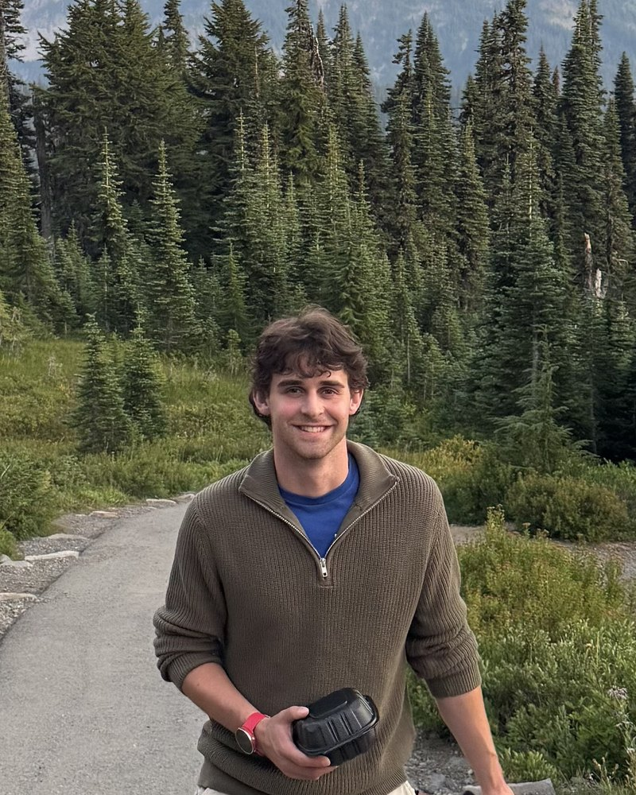

Charles Krebs
I'm a mechanical engineering student at Tufts University, minoring in music engineering. I grew up in northeastern Vermont, where I participated in a lot of music, whether it was jazz band or symphony orchestra, and spent most of the rest of my free time outdoors in some form or another. I always loved to try to understand the things around me and figure out how they work. These factors eventually led me to the world of acoustics, and also encouraged me to make a positive difference in the world, particularly surrounding sustainability and environmental issues.
I have a particular interest in research and design in engineering, centered heavily around acoustics. Specifically, I am excited by electro-acoustic transducers and architectural acoustics.

Projects
About Me:
In my free time I enjoy backpacking, climbing, playing the guitar, trombone, and piano, running, and XC skiing. I competed as an NCAA Division III cross country and track athlete, focused mainly on the mile and 800 m events.
- Education
- Tufts University
B.S. Mechanical Engineering
Minor in Music Engineering - Graduating
- May 2027
- Focus
- Acoustics · Product design · Fabrication · Audio electronics
- Recognition
- Dean's List, five semesters